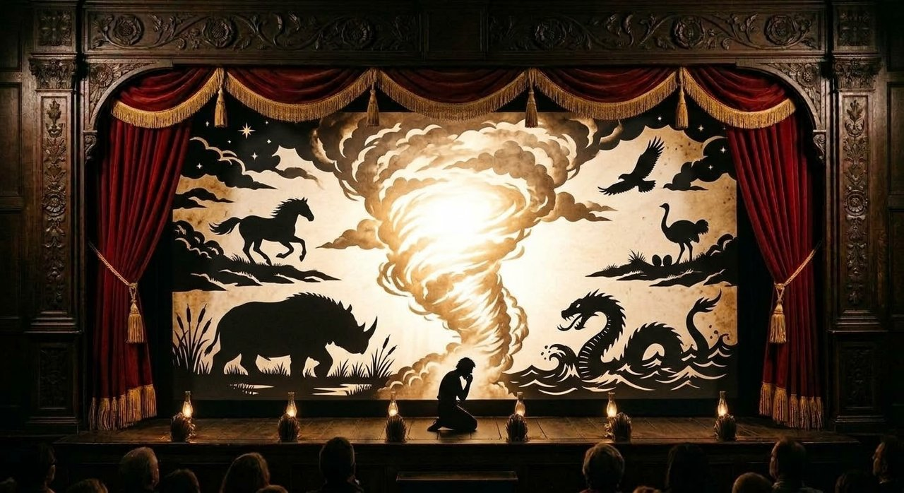

Job 38–41: The Lord Answers out of the Whirlwind
Job is asking "why?" But God is showing him "Who."
✦ ✦ ✦Use the arrow keys or swipe to move. Tap any gold reference to read the verse.

Where we are: Part 4, Job 38–41
The storm that gathered as Elihu spoke, which the boy used as it came to lecture Job with what he thought was profound wisdom, brings with it the voice of God. And He sets to immediately show the shallowness of Elihu and the three friends' thinking.
Then the Lord answered Job
Then the Lord answered Job out of the whirlwind, and said, Who is this that darkeneth counsel by words without knowledge? Gird up now thy loins like a man; for I will demand of thee, and answer thou me.Job 38:1-3
What a terrifying moment, to know that God will demand answers of you. And this fear should grip all men, that they believe on Christ, to avoid that fierce judgment, where all will be asked of those not found in His book of Life, by the omnipotent God of all.
The corner stone thereof
Where wast thou when I laid the foundations of the earth? declare, if thou hast understanding. Who hath laid the measures thereof, if thou knowest? or who hath stretched the line upon it? Whereupon are the foundations thereof fastened? or who laid the corner stone thereof; When the morning stars sang together, and all the sons of God shouted for joy?Job 38:4-7
He laid the foundations of the earth, the breadth and scope of creation was measured out by Him. The foundations of the world are set by Him, and the cornerstone thereof.
And are built upon the foundation of the apostles and prophets, Jesus Christ himself being the chief corner stone;Ephesians 2:20
A chief corner stone, elect, precious
Wherefore also it is contained in the scripture, Behold, I lay in Sion a chief corner stone, elect, precious: and he that believeth on him shall not be confounded. Unto you therefore which believe he is precious: but unto them which be disobedient, the stone which the builders disallowed, the same is made the head of the corner, And a stone of stumbling, and a rock of offence, even to them which stumble at the word, being disobedient: whereunto also they were appointed.1 Peter 2:6-8
The morning stars sang together, and all the sons of God shouted for joy and the truth of Jesus Christ, the lamb slain before the foundation of the world. The cornerstone laid, upon Which all is built.
The sons of God shouted for joy
When the morning stars sang together, and all the sons of God shouted for joy?Job 38:7
(I believe this is an OT prophecy of Christ, Who has been since before creation, but Who IS and was born of men, to die and rise again. That the stars are the hosts of Heaven. That the sons of God are those from Adam who believed. Some think this is literally creation, and so the sons of God must be angels, to whom at no time did God call sons, according to scripture.)
"Morning stars" are angels, distinct from "sons of God," who are believers rejoicing in Christ's day, like Abraham did (). This happens outside time, reflecting Christ's eternal victory, not a pre-human event.
Time itself is a testimony
From the seas to the shores to the heights of the sky, to the position of the stars in the sky, God has set all things, and the paths thereof.
The wonder of creation is not only in the placement of these things God created, but in their paths and purposes. Time itself is a testimony of His power.
The day chasing away the darkness. The rivers carrying the floodwaters to the sea. The voice of thunder, and the rain upon the wilderness, making it spring to life. The pictures of God's mercy and wrath, revealed. Made manifest that no man has an excuse.
Only God can create these things
Only God can create these things, and not as man would, even if we could. For the Lord knows the beginning from the end. The order He has made is greater than our ability to comprehend.
Creation isn't like the birth of man. Flood waters are pictured in birth, but is not the birth. There is no womb that could create the frost. The hail which will be used in due time by the Lord in His wrath. Rain isn't called and lightning ordered and arrayed, but by the living God.
Hast thou entered into the treasures of the snow? or hast thou seen the treasures of the hail, Which I have reserved against the time of trouble, against the day of battle and war?Job 38:22-23
God has even put what we call the food chain in its place, that the beasts of the world eat, even as they don't sow or reap. But that He opens death to all, that they may eat.
Who hath put wisdom in the inward parts? or who hath given understanding to the heart?Job 38:36
And this same God puts wisdom in man's heart.
The big picture
The Lord continues to speak to Job out of the whirlwind. Job, His servant, seeks to know why he has been afflicted. But God challenges him to see the things that His providence delivers. The grand scheme. The big picture.
That for all the wisdom the Lord has given man, and the ability of man to apply it for their lives, there is so much more that is beyond our control, but not His.
God asks Job to consider the wild goats, the wild ass, the unicorn - which isn't a one horned mythical beast, but the wild oxen, the strong bull or aurochs as it was known, the ostrich or the horse. The hawk and the eagle.
The wild goat, the wild ass, the unicorn
The wild goats
Man doesn't control or understand the time of the goat, when they calve. Unlike the tame goats, they, without any aid or midwifery, bring forth their kids in sorrow, and cast them out to fend for themselves. And God provides.The wild ass
The wild ass is free. God has given it liberty in the wilderness, and a stubborn rebellion against being controlled by men. He searches the mountains for his food, and while it doesn't starve, it isn't fed as a tamed donkey would be.The unicorn
The unicorn, or wild bull, doesn't serve man, or tread out the corn. It doesn't reside in a stable. It can't be trusted with the work of the tamed oxen. But it lives.The peacock and the ostrich
Gavest thou the goodly wings unto the peacocks? or wings and feathers unto the ostrich? Which leaveth her eggs in the earth, and warmeth them in dust, And forgetteth that the foot may crush them, or that the wild beast may break them. She is hardened against her young ones, as though they were not hers: her labour is in vain without fear; Because God hath deprived her of wisdom, neither hath he imparted to her understanding.Job 39:13-17
God gives goodly wings to the peacock, which cannot fly. And wings and feathers to the ostrich, which not only cannot fly, but runs in the wilderness, dropping her eggs to be hatched in the sand and sun. Not protected in a nest, but exposed to being crushed or broken and eaten. And yet, they don't go extinct. God provides, even as He withheld wisdom and understanding to the big dumb bird, giving her speed to outrun man, even on horseback.
The ways and whys of creation don't always make sense to man, and are often well out of our control, and yet it continues on, in His ways.
The horse, the hawk and the eagle
The horse
The horse, whose strength man has harnessed, did not gain its strength from men. It can be startled by a grasshopper, but charge into battle, the noise of armed men, and the shield and spear rattling against him, the trumpet sounding as it rides headlong towards death.The hawk and the eagle
The hawk flies towards the south, soaring in the warm winds, without our instruction. The eagle nests in the castles of mountains, and seeks prey afar off. Not by will of man. Her chicks go where corpses lay, and feast.In all this, man is helpless. It is all the providence of God.
We are like these same beasts
Like the beasts, man is a wild thing, marrying, and bringing forth children. Stubborn and strong willed. Even at liberty, prone to wander, God provides.
But we are like these same beasts. We go about our lives, having children that will grow and go off. Stubborn to instruction, refusing to be driven where we should go. Forsaking the blessings of being a servant to God, in exchange for His mercies and bare sustenance in the wilderness.
Man, who is frightened of thunder and who can't be trusted to do what's right, who runs after war, who abandons their own kin to the wastes of life, who feeds on the dead, our wisdom is not sufficient to explain our nature, or how it mirrors those wild beasts we can't comprehend. But to God, and to His point of view, it is all in order.
Job asks why, God shows Who
In all these, suffering, danger, apparent neglect, and death are woven into the fabric of life, yet the creatures flourish under God's hand. None of it is explained to them. None of it is micromanaged by man. And none of it indicates that God has abandoned His creation.
We behave in ways that should result in our extinction. And yet, God's mercies are extended to us in ways we don't even notice or comprehend.
Job is asking "why?" But God is showing him "Who." By enlarging Job's view of God, and the order He created, He is answering Job, just not in the way Job intended.
Behold, I am vile
Behold, I am vile; what shall I answer thee? I will lay mine hand upon my mouth. Once have I spoken; but I will not answer: yea, twice; but I will proceed no further.Job 40:4-5
In the face of the living God, righteous Job faced with the holiness that is the Lord, is speechless.
The Lord asks from the whirlwind if any contend with Him, do so. If any seek to instruct Him. Job has no answer. His friends are silent.
Hast thou an arm like God?
Gird up thy loins now like a man: I will demand of thee, and declare thou unto me. Wilt thou also disannul my judgment? wilt thou condemn me, that thou mayest be righteous? Hast thou an arm like God? or canst thou thunder with a voice like him? Deck thyself now with majesty and excellency; and array thyself with glory and beauty. Cast abroad the rage of thy wrath: and behold every one that is proud, and abase him. Look on every one that is proud, and bring him low; and tread down the wicked in their place. Hide them in the dust together; and bind their faces in secret. Then will I also confess unto thee that thine own right hand can save thee.Job 40:7-14
God responds to meek Job rhetorically; telling him to gird up his loins, to stand up and go against Him. To condemn Him and declare himself righteous. That if Job is strong, having a mighty arm, a voice like thunder, decked in the majesty and glory like God, and if Job can abase the proud in their wrath, go on and stand against God.
Now, as we know from the beginning and the end, Job maintained his integrity and his faith. He did not stand to correct God. But God says he couldn't if he wanted to. He isn't like unto man. And our own right hand cannot save us. Only His.
Looking unto Jesus the author and finisher of our faith; who for the joy that was set before him endured the cross, despising the shame, and is set down at the right hand of the throne of God.Hebrews 12:2
Behold now behemoth
Behold now behemoth, which I made with thee; he eateth grass as an ox. Lo now, his strength is in his loins, and his force is in the navel of his belly. He moveth his tail like a cedar: the sinews of his stones are wrapped together. His bones are as strong pieces of brass; his bones are like bars of iron. He is the chief of the ways of God: he that made him can make his sword to approach unto him.Job 40:15-19
Having made clear the lowliness of man, God again points to His creation, how can man ever comprehend the wonder and glory of God and His divine will, when they can't even comprehend the creatures and their ways He created.
He describes the behemoth, a creature like we are, whose great size and stature is achieved, while eating grass as an ox. But its strength and power is overwhelming. A tail like a cedar. His hide, even around its privates, is strong, bones like brass, like bars of iron.
There is discussion about what this creature is. A hippo, rhino, an elephant, a brontosaurus. But the number of beasts throughout the time since creation it could apply to, points to a real animal, one Job would know. Irrelevant to the main point, that only God could make it, fell it, feed it.
To God, this creature is nothing, while it is a behemoth to man.
King over all the children of pride
Canst thou draw out leviathan with an hook? or his tongue with a cord which thou lettest down? Canst thou put an hook into his nose? or bore his jaw through with a thorn? Will he make many supplications unto thee? will he speak soft words unto thee? Will he make a covenant with thee? wilt thou take him for a servant for ever?Job 41:1-4
God again humbles Job. The great leviathan, that dragon of many heads, whose size and power make him impossible to catch, his scales like armor, his breath as fire that even his sneezing brings forth light ().
Again, like the behemoth, there is much debate over what animal the leviathan is, a whale, a crocodile, some other mythic beast. But the use of the term, interchangeable with dragon throughout scripture, makes a compelling case that it is that old serpent...
He beholdeth all high things: he is a king over all the children of pride.Job 41:34
Leviathan through scripture
So is this great and wide sea, wherein are things creeping innumerable, both small and great beasts. There go the ships: there is that leviathan, whom thou hast made to play therein.Psalm 104:25-26
Thou didst divide the sea by thy strength: thou brakest the heads of the dragons in the waters. Thou brakest the heads of leviathan in pieces, and gavest him to be meat to the people inhabiting the wilderness.Psalm 74:13-14
In that day the Lord with his sore and great and strong sword shall punish leviathan the piercing serpent, even leviathan that crooked serpent; and he shall slay the dragon that is in the sea. In that day sing ye unto her, A vineyard of red wine.Isaiah 27:1-2
Who can stand before Him?
But, regardless if it is a real beast, a figure for Satan, both...the insignificant Job is powerless before it. Man cannot contain it. Only God can break its heads and slay it.
None is so fierce that dare stir him up: who then is able to stand before me?Job 41:10
Man is finite. God, infinite. And before Him who can stand?
Man is helpless against sin
In Job 41, God illustrates human inability to subdue the leviathan. No one can catch it like a small fish using a hook, line, or thorn through its gills. It will not plead for mercy or agree to serve as a captive. It cannot be tamed or confined like a pet bird for amusement. Any hope of capturing it is vain; the mere sight of it overwhelms even brave men, causing them to faint.
If the leviathan is a picture (real or spiritually, or again, both) of Satan and of the sin of this world, isn't it a fitting analogy?
Man is helpless against sin on our own. We can't subdue it, reason with it, enter into a covenant to make peace with it, control it, enslave it, or truly make profit from it. It produces fire that burns all in its path, leaving behind it a trail that shines behind it.
Only God can subdue the dragon
Satan himself initiated the trial of Job, that the old serpent could accuse the man God described as perfect in his ways. And since the destruction of Job's life, his wealth, posterity and health, the Devil is noticeably absent afterwards.
There is a kind of closure to the story here, in the penultimate chapter, to see God describe a beast too fierce for man to handle, yet nothing to Him. Just as man is incapable of destroying sin and death and the fires of Hell, himself.
Job isn't restored by his own wisdom, his works, by proving his own righteousness before God. When the Lord offered Job to gird up his loins and confront Him, Job could only cover his mouth and sit in silence. So, it is God who restores Job.
Only by God's grace do we find a way to overcome the world, death and Hell, by the blood of the atonement shed by Jesus, and everlasting glory by His life, risen in triumph. Only God can subdue the dragon. Man is helpless against it.
What we have seen
- Out of the whirlwindThe storm that gathered as Elihu spoke brings with it the voice of God.
- The corner stoneThe cornerstone laid, upon Which all is built.
- Why, and WhoJob is asking "why?" But God is showing him "Who."
- Our own right handOur own right hand cannot save us. Only His.
- The dragonOnly God can subdue the dragon. Man is helpless against it.
Related